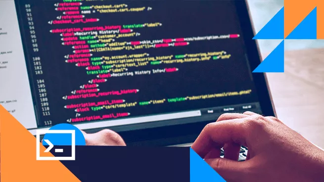
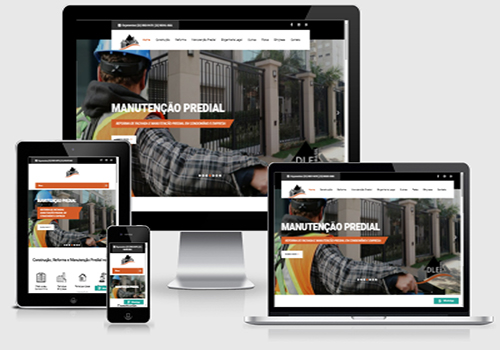

|
|
Atividade
SOBRE WEB DESIGNER

O web designer projeta sites, blogs, sistemas, aplicativos para web e peças digitais como banners e artes para redes sociais. Seu trabalho, muitas vezes, é confundido com a de um desenvolvedor web ou programador, que estão mais focados na programação de códigos de um site.
nosso trabalho web!


JOÃO VICTOR ©2023